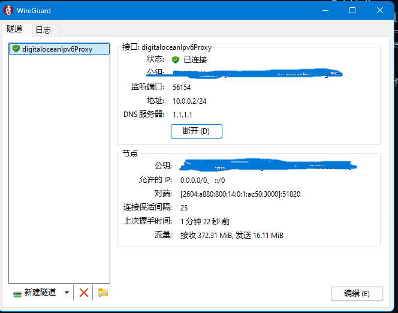

服务器转ipv6流量
2025-08-31
买一台服务器
强烈建议digitalocean，一个月六美元
创建水滴时记得打开ipv6
服务器上工作
安装wireguard
apt install -y wireguard iptables
生成密钥
wg genkey | tee server_private.key | wg pubkey > server_public.key
wg genkey | tee client_private.key | wg pubkey > client_public.key
编辑/etc/wireguard/wg0.conf
填写以下内容：
[Interface]
Address = 10.0.0.1/24 # WireGuard 内网 IPv4
ListenPort = 51820
PrivateKey = [server_private.key]
# 开启转发
PostUp = sysctl -w net.ipv4.ip_forward=1 net.ipv6.conf.all.forwarding=1
PostUp = iptables -t nat -A POSTROUTING -o eth0 -j MASQUERADE
PostDown = iptables -t nat -D POSTROUTING -o eth0 -j MASQUERADE
[Peer]
# 客户端配置
PublicKey = [client_public.key]
AllowedIPs = 10.0.0.2/32
启动服务
systemctl enable wg-quick@wg0 --now
客户端下载wireguard
客户端配置以下内容
[Interface]
Address = 10.0.0.2/24
PrivateKey = [client_private.key]
DNS = 1.1.1.1
[Peer]
PublicKey = [server_public.key]
Endpoint = [你的VPS IPv6地址]:51820
AllowedIPs = 0.0.0.0/0, ::/0
PersistentKeepalive = 25
ipv6地址填写的地方需要有方括号[]
点击连接：

得到如上即可